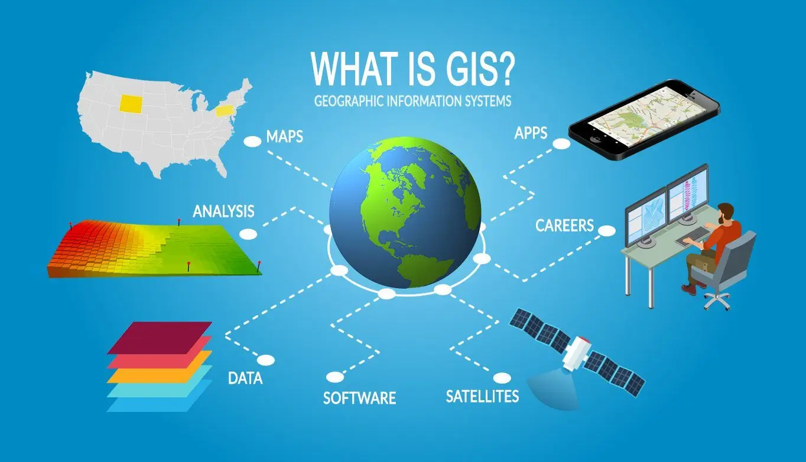
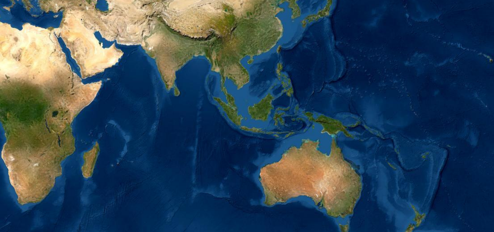

Sistem Informasi Geografis

Sistem Informasi Geografis (SIG) adalah sistem yang membuat, mengelola, menganalisis,
dan memetakan data geospasial. SIG menghubungkan data ke peta, mengintegrasikan data
lokasi di mana hal-hal berada dengan semua jenis informasi deskriptif. Informasi tersebut
dapat berupa keadaan dari suatu hal di sana. SIG membantu pengguna untuk memahami pola,
hubungan, dan konteks geografis.
Sistem Informasi Geografis (SIG) menyimpan, menganalisis, dan memvisualisasikan data
untuk posisi geografis di permukaan bumi.
SIG atau juga dikenal sebagai GIS (Geographic Information Systems) merupakan alat berbasis
komputer yang memeriksa hubungan spasial, pola, dan tren dalam geografi.
Dahulu SIG digunakan pada tahun 1854 untuk memetakan wabah penyakit di Kota London (tanpa komputer).
Pada dasarnya, kita masih menggunakan jenis analisis spasial ini hari ini tetapi dengan cara yang lebih canggih.
Library Peta Open-Source

Salah satu tools atau alat untuk visualisasi data yang berkaitan dengan geografis adalah peta. Untuk menampilkan peta
pada SIG, terdapat beberapa library peta open-source yang dapat digunakan. Library tersebut dijelaskan lebih lanjut
di bawah ini.
Leaflet

Dibuat pada tahun 2010 oleh Vladimir Agafonkin, Leaflet telah menjadi library pertama yang memanfaatkan
fitur HTML 5 baru, seperti rendering Canvas, yang menawarkan modernitas dan kinerja hebat. Ini adalah
library ringan yang berfokus untuk menampilkan peta cepat di web.
Ini menyediakan API sederhana, semuanya dibuat sehingga mudah untuk menanamkan informasi geospasial
di situs web: jika Anda ingin menampilkan peta dengan lapisan latar belakang ubin (OSM, satelit),
ditambah beberapa data vektor khusus (geojson) di atasnya , Anda akan menemukan pengalaman yang luar
biasa dan mudah dengan menggunakan Leaflet, dan hasilnya akan dengan jelas menjawab kebutuhan Anda.
Kelemahan dari pendekatan ini adalah bahwa library tidak menyediakan palet lengkap fitur geospasial,
jika Anda ingin membangun antarmuka pengguna yang lebih maju, Anda harus mengandalkan plugin dengan
sangat cepat. Selain itu, lebih sulit untuk berinteraksi dengan standar OGC, dan menggunakan proyeksi khusus.
Leaflet didasarkan pada proyeksi WebMercator dan tidak menyediakan cara mudah untuk mengubah proyeksi.
Sistem dibangun di atas integrasi plugin, kemudian banyak ekstensi komunitas muncul untuk memperluas
fitur dasar dari library. Anda dapat menemukan daftarnya di sini, biasanya membuat hidup Anda lebih mudah
untuk menampilkan jenis data tertentu, gaya yang dibuat sebelumnya untuk keperluan dataviz, edisi geometri, dll.
Library pada dasarnya sudah matang dan sebagian besar hidup melalui ekosistem pluginnya. Inti tetap
dipertahankan meski bukan oleh penulis aslinya. Leaflet memiliki basis pengguna yang sangat besar dan
masih sangat populer, yang merupakan prestasi yang mengesankan mengingat intinya belum menerima perubahan
signifikan selama bertahun-tahun.
Sebagai kesimpulan, Leaflet adalah pendekatan pertama yang bagus untuk library pemetaan web. Itu tidak
memerlukan terlalu banyak API atau pengetahuan pengkodean dan memungkinkan Anda membuat peta dengan
cukup mudah. Ada baiknya untuk melihat plugin apa yang tersedia dan apakah plugin tersebut masih dipertahankan
sebelum menyelami penerapan aplikasi berbasis peta yang kompleks.
OpenLayers
OpenLayers adalah salah satu library pemetaan web pertama. Jauh sebelum Mapbox GL dan Leaflet, OpenLayers 2 telah
digunakan di seluruh dunia untuk menampilkan peta di web. Itu adalah alternatif open source terbaik untuk
Google Maps API.
Versi 3 telah sepenuhnya dikerjakan ulang dari awal untuk merangkul kemungkinan browser baru, dan hidup dengan
komunitas yang aktif sejak 2013, hari ini adalah versi 6.
Tujuan utama OpenLayers adalah untuk menyediakan libary pemetaan berfitur lengkap, yang mencakup sebagian
besar kebutuhan dunia geospasial:
- Banyak dukungan format sumber data (utfgrid, WFS, WMS, GPX, KML, geojson, xyz, ubin vektor dan banyak lagi)
- Dukungan besar OGC untuk interoperabilitas yang lebih baik
- Proyeksi khusus & proyeksi ulang raster langsung
- Kemungkinan gaya yang luas
- Snapping, edisi geometri
- Multidunia
- Graticule
- Pengomposisian warna dan operasi raster
Ini juga mendukung Spesifikasi Mapbox: Gaya dan ubin Vektor sehingga Anda juga dapat menggunakan Ubin Vektor.
Pekerjaan besar telah dilakukan untuk mendukung spesifikasi tersebut dan untuk mengoptimalkan rendering ubin
vektor hingga batas yang dapat didukung Kanvas 2D, baru-baru ini membuat prototipe multithreading Offscreen Canvas.
API ini cukup mudah digunakan, tetapi penyelaman pertama ke OpenLayers mungkin sedikit lebih sulit dibandingkan
dengan Leaflet dan Mapbox GL, terutama jika Anda tidak nyaman dengan pengkodean secara umum. Kurva pembelajarannya
sedikit lebih sulit tetapi mungkin patut dicoba jika Anda ingin mengembangkan aplikasi pemetaan web yang kompleks.
Ada beberapa ekstensi seperti ol-cesium yang mengelola binding antara Openlayers dan CesiumJs, library globe
virtual hebat yang ditulis dalam WebGL, untuk beralih dari peta 2D ke 3D.
Ini berbasis komunitas dan sangat aktif, menerima kontribusi dan minat dari banyak pengguna dan pengembang.
Anda dapat dengan mudah berpartisipasi dalam basis kode dan menambahkan fitur yang hilang ke libary
yang Anda harapkan.
Baru-baru ini, sebuah crowdfunding besar memanfaatkan ratusan ribu dolar untuk membantu kemajuan komunitas dan
meningkatkan libary.
Banyak perusahaan menyediakan konsultasi untuk membantu Anda menggunakan OpenLayers, dan Anda akan segera
mendapat jawaban dari komunitas jika Anda menghadapi beberapa masalah saat menggunakan libary ini.
Sebagai kesimpulan, OpenLayers bukanlah libary termudah untuk digunakan, manfaatkan banyak contoh online
dan Anda akan segera dapat menampilkan peta yang indah di situs web Anda. Ini adalah libary terlengkap, sangat
berkinerja dan sepenuhnya open source dan didasarkan pada komunitas yang akan membantu Anda di sepanjang jalan.
Mapbox GL
Perusahaan Mapbox telah membawa revolusi di dunia geospasial terbuka, menghadirkan standar dan library
yang benar-benar mengubah cara kita bermain dengan peta di web. Semuanya telah dibuat untuk membuat pengalaman
pengguna semulus dan secepat mungkin, dengan fokus besar pada penggunaan seluler. Ubin vektor adalah pilar konstelasi mereka,
semuanya dioptimalkan untuk menampilkan data vektor dengan rendering yang menakjubkan dan lancar.
Mapbox GL JS adalah library javascript yang menangani rendering ke browser web. Diimplementasikan dalam WebGL, kinerjanya
sangat baik dan dioptimalkan untuk format Ubin Vektor. Ini adalah library yang paling berkinerja untuk membuat data vektor.
Mapbox GL Native dan SDK untuk platform seluler adalah library asli untuk mencapai tujuan yang sama pada aplikasi asli seluler.
Baru-baru ini Mapbox Mobile Android SDK mulai mengandalkan biner berpemilik, membuat masa depan tidak pasti tentang teknologi ini.
Biasanya, Mapbox GL bekerja di sepanjang petak vektor yang dihosting Mapbox, jadi Anda perlu menyediakan token untuk mengakses
data Anda, dengan paket komersial khusus. Anda dapat menggunakan Mapbox GL dengan ubin vektor Anda sendiri.
Library ini juga bagus untuk menampilkan format raster tetapi bukan tempat yang paling menonjol. Ini menyediakan API yang hebat
dan sederhana untuk menampilkan berbagai jenis data (ubin vektor, geojson, server ubin), mengedit geometri, menavigasi, dll.
Sebagai kesimpulan, Mapbox GL adalah library yang mengagumkan untuk menampilkan data vektor di WebGL, dengan cara yang cepat
dan lancar, ketika kebutuhan Anda difokuskan pada visualisasi data vektor yang berpotensi kompleks. Ini mungkin bukan pilihan terbaik
jika Anda menginginkan proyeksi khusus atau aplikasi pemetaan web berfitur kaya yang kompleks, dan ingat bahwa itu berasal dari
perusahaan swasta dan bahwa cara Anda diizinkan untuk menggunakannya mungkin tidak bertahan selamanya.
Mapbox-GL adalah library open-source pertama yang memungkinkan "memiringkan" peta dan memberikan tampilan 3D parsial, yang memberikan
pengalaman pengguna yang mengesankan saat menavigasi peta. Ini bukan library perenderan peta 3D yang lengkap, dan misalnya tidak
dapat secara asli membuat jerat medan atau awan titik (meskipun ini dapat dicapai dengan cara lain).
Semua arsitektur rendering dibangun di atas proyeksi Web Mercator, sayangnya Anda tidak dapat mengubahnya. Tidak ada dukungan standar
OGC yang lengkap sehingga Anda perlu memeriksa apa yang didukung library sebelum melompat ke dalamnya untuk implementasi Anda.
Perhatikan bahwa Mapbox GL JS adalah open source, tetapi tidak berbasis komunitas, dikembangkan dan dikelola oleh perusahaan swasta,
dengan tujuan dan strategi mereka sendiri.